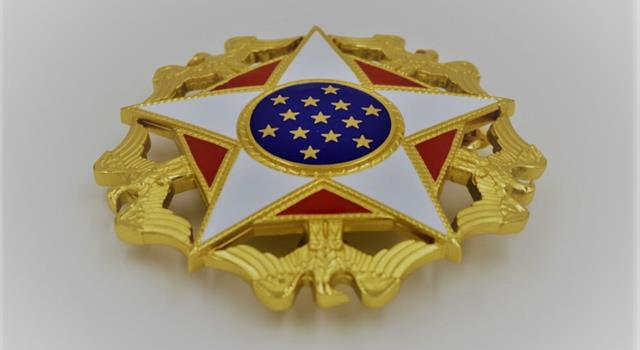
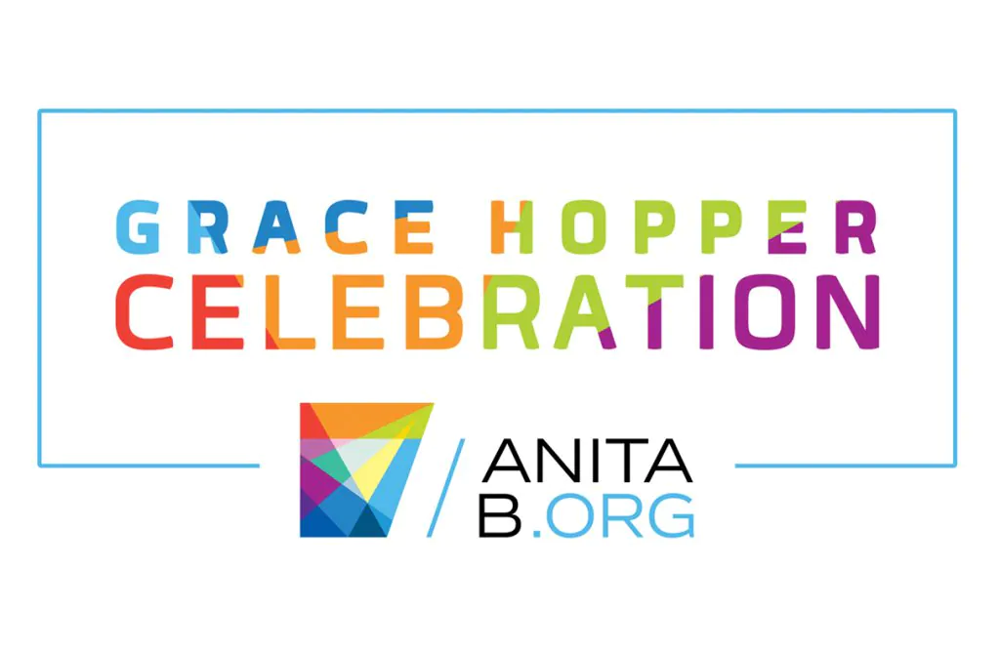

- Marine Américaine
- Bureau Of Ordnance Computation Projet de l'Université Havard
- Au developpement des ordinateurs Havard Mark I Havard Mark II, Havard Mark III
- Eckert-Mauchly Computer Corporation rejoint l'équipe de développement UNIVAC I à Philadelphie
- A-O System, compilateur pour le UNIVAC
- Idée d'une programmation langage proche de l'anglais
- 60 ans : Quitte la Navy
- Les premiers languages de programmation en comptant COBOL et FORTRAN
- Sa retraite avec le grade de Rear Admiral
-Consultante Externe à Digital Equipment
- Fut enterrée avec les honneurs millitaires au cimetière national d'Arlington
| Defense Distinguished Service Medal | |
 |
National Medal of Technology |
|  | Médaille Présidentielle de la Liberté |
| La place Grace-Murray-Hopper est une place publique quartier de la Gare du 13e arrondissement de Paris Laboratoire d'informatique de l'École polytechnique |
|
| National Women's Hall of Fame | |
|  | Grace Hopper : Celebration of Women in Computing |
- Le mot Bug est faussement attribué à Hopper

Cérémonie de la Médaille Présidentielle de la Liberté :